01
Frame the ask.
Erlich routes the brief.
Dinesh designs when needed.
Jason locks the plates.

Four writers race. Codex reviews. Erlich picks the first clean PR. Jason says yes.
Architecture for Iterate Consulting · design only · HOLD live.
Erlich routes the brief.
Dinesh designs when needed.
Jason locks the plates.
Codex reviews each PR
when open.
Review-only.
Erlich takes the first
clean PR. Closes the
other three.
Jason authorizes merge.
Gilfoyle deploys if needed,
with Jason’s yes.
Design when needed. Race in parallel.
Converge before anything ships.
Chicago PM receives the ask and routes the work.
Dinesh → Open Design / Astra plates → Jason locks plates.
No UI design needed? Continue.
Jian-Yang starts FOUR writers on separate branches.
Codex reviews each PR when open. All four enter the review lane.
Erlich picks the first clean PR; closes the other three.
Gilfoyle deploys if needed. Jason’s explicit yes is required before merge/deploy.
Chicago PM / PR router
Dinesh → Open Design / Astra plates.
Jason locks plates. Otherwise, continue.
Coding owner · concurrent, separate branches
When open. All four get reviewed.
Closes the other three. Empty CI / billing
skips are not “clean”.
Gilfoyle · deploy / infra · deploys if needed.
Jason: explicit yes before merge/deploy.
Concurrent by design, isolated by branch.
Harness and model assignments stay explicit.
Cursor cloud agents (account default model)
pi CLI with terra/gpt
Antigravity CLI (agy); Google AI Pro
Grok Build on SuperGrok bucket
Keep the race moving.
Never weaken the clean-PR gate.
One unavailable.
Three still racing.
Availability is not
evidence of quality.
Review-only. No writer bypass.
Empty CI / billing skips are not “clean”.
Required before merge/deploy.
Leftover-work path.
Separate from the race.
Erlich routes the handoff. No on-demand burn.
A CoS-to-CoS relay through Slack.
Dallas is the overflow path, not the default race.
Recognizes the capacity constraint or Dallas fit. Relays the brief to Dallas CoS in the Slack room.
Brief relay / desk coordinationReceives the relayed brief for Dallas full-stack work. Coordinates the Dallas-side desk response.
Full-stack fit / e.g. Bolton on piRemains the week notebook handshake.
The notebook handshake stays in place.
Architecture for Iterate Consulting · design only · HOLD live.
Four stages. Clear ownership. No auto-ship.
Ask lands
at Erlich.
Brief framed.
Ready for design
or execution.
If UI: Dinesh
shapes the plates.
Open Design / Astra
→ Jason locks plates
Jian-Yang launches
four concurrent writers.
Separate branches
Cursor cloud · pi/terra-gpt
Antigravity · Grok Build
Codex reviews each PR.
Erlich picks first clean;
closes the other three.
Jason explicit yes
→ merge
Gilfoyle deploys if needed.
Frame the ask. Lock the design. Race the build. Ship only with a human yes.